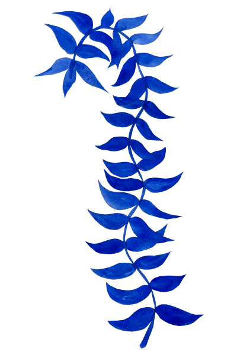
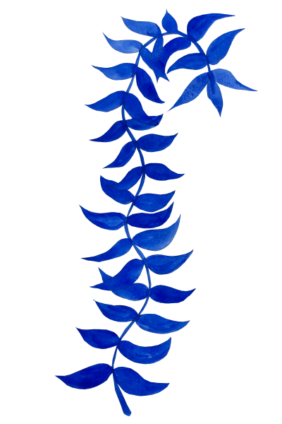
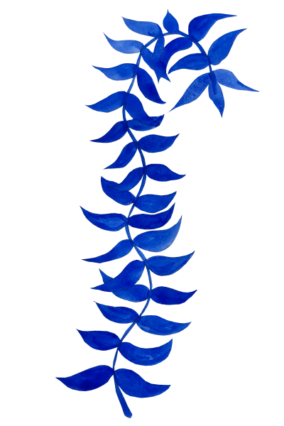

 

Uddannelse
2022 -: KEA
Multimediedesign Webudvikling, layout, animation, video, konceptudvikling m.m2016-2019: SAFD
Bachelor i beklædningsdesign Idégenerering, formeksperimenter, branding, tilskæring, konstruktion, skrædderi m.m2015-2016: Håndarbejdets Fremme, Textilskolen Holte
Dagshøjskole med fokus på kunst og design. Vævning, indfarvning, croquis m.m2011-2014: Helsingør Gymnasium
Engelsk A, Psykologi B og Samfundsfag B